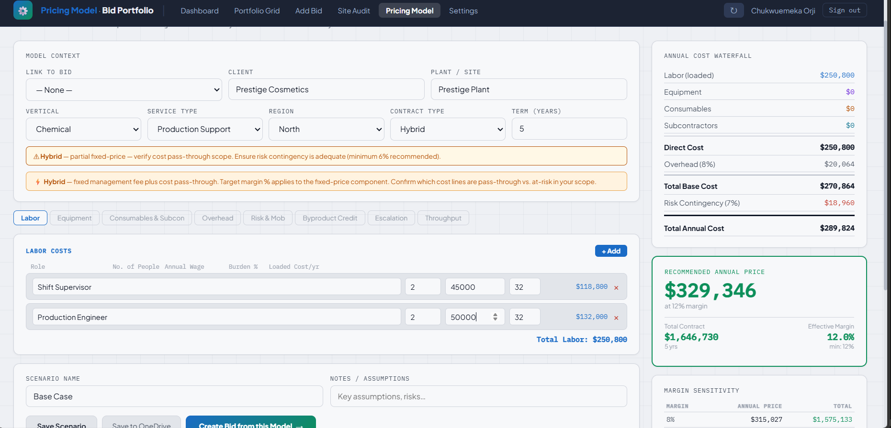

The Problem & What Was Built
Service organisations competing for large industrial contracts face a recurring problem: bid decisions rely on individual judgment rather than a consistent economic framework. Opportunities get pursued based on revenue size alone, with no structured view of margin, pursuit cost, commodity risk, or site readiness. The result is misallocated commercial resources and contracts that erode profitability.
The CAO Bid Portfolio replaces that with a disciplined commercial decision engine — structuring every opportunity through the same economic lens before a single proposal hour is spent.
Before
- Bid viability assessed subjectively with no consistent economic framework
- Pursuit cost not tracked against contract value
- Byproduct commodity revenue excluded from margin calculations
- No structured site audit gate — field readiness tracked informally
- Go/No-Go decisions by individual judgement with no rule enforcement
- Concurrent bid load not monitored — commercial resources overstretched
After
- Two-layer economic model: pursuit cost evaluated against contract Expected Value
- Byproduct commodity revenue factored into adjusted margin calculation
- Commodity sensitivity flag when implied price/ton exceeds market threshold
- 7-point site audit gate per bid before submission
- 15 deterministic Go/No-Go rules evaluated in priority order on every update
- Capacity concurrency monitor — flags when active bid load exceeds limit
Two-Layer Contract Economics
Every bid is evaluated across two economic layers. Layer A asks whether the pursuit itself is worth the investment. Layer B models the full contract economics — adjusted margin accounting for byproduct revenue, overhead, and risk. Together they answer the right commercial question: not "can we win this?" but "should we pursue it?"
- Quantifies the cost of the bid development process itself
- Based on bid team size, pursuit duration, and loaded team rate
- Measured against the Expected Value of the contract
- Pursuit ROI: gross profit relative to what was spent pursuing it
- Review flag when pursuit cost is disproportionate to contract value
- Hard stop when pursuit cost equals or exceeds the full Expected Value
- Models adjusted annual margin net of all cost factors
- Byproduct commodity revenue applied as a cost base offset
- Overhead allocation factored into the cost structure
- Commodity sensitivity: implied price/ton vs configurable market baseline
- Expected Value: contract revenue weighted by win probability
- Full-term totals projected across the contract period
15-Rule Go/No-Go Framework
| # | Outcome | Rule |
|---|---|---|
| 1 | NO-GO | Safety Pre-Qualification failed |
| 2 | NO-GO | Site visit not completed and bid is at Submitted or Won stage |
| 3 | NO-GO | Fixed Fee contract and adjusted annual margin is below the minimum threshold |
| 4 | NO-GO | Bid pursuit cost equals or exceeds the full Expected Value of the contract |
| 5 | NO-GO | Active concurrent bids at or above the capacity limit |
| 6 | REVIEW | Adjusted annual margin is below the minimum threshold |
| 7 | REVIEW | Win probability is below the minimum floor |
| 8 | REVIEW | Pursuit cost exceeds the maximum allowable percentage of Expected Value |
| 9 | REVIEW | Fixed Fee contract type — cost overrun risk flag, always applied |
| 10 | REVIEW | Implied byproduct price per tonne exceeds the commodity market baseline threshold |
| 11 | REVIEW | Safety Pre-Qualification pending — outcome not yet confirmed |
| 12 | REVIEW | Site visit not yet completed at Qualified stage |
| 13 | WON | Stage set to Won — terminal status, overrides all calculated outcomes |
| 14 | LOST | Stage set to Lost — terminal status |
| 15 | NO-GO | Stage set to No-Go — terminal status |
Six Views
Active bid count, pipeline Expected Value, GO/REVIEW/NO-GO/Won breakdown, annual revenue under management, average adjusted margin, byproduct pipeline, total pursuit investment. Stage distribution, industry vertical mix, contract type risk split, capacity monitor, and mobilisation tracker for won contracts.
All active bids in a filterable table — Stage, Industry Vertical, and Go/No-Go outcome filters applied simultaneously. Expand any row to edit all fields inline with a live contract economics summary updating in real time. Two-step confirmation on delete.
New bid intake form with a live preview panel calculating the Go/No-Go outcome, adjusted margin, Expected Value, pursuit ROI, and any fatal flags in real time as the form is filled — before the bid is saved to the portfolio.
All bids in early stages shown with a per-bid 7-point checklist: tonnage, equipment, labour environment, byproduct streams, commodity buyer confirmation, safety walkthrough, and scope agreement. Progress bar, financial snapshot, and Go/No-Go status per bid card.
Bottom-up annual cost build: labour roles, headcount, wages and burden rate through to equipment, consumables, subcontractors, overhead, risk contingency, byproduct credit, escalation, and throughput. Outputs a recommended annual price at target margin with a full margin sensitivity table.
All decision engine parameters are configurable — margin threshold, win probability floor, pursuit cost ceiling, burden rate, overhead, commodity baseline, concurrency limit. Changes are shared across all users. Live preview shows current rule thresholds before saving.
Live Cost-Build Pricing Calculator
The Pricing Model is a bottom-up cost construction tool purpose-built for industrial services contract pricing. Starting from labour — roles, headcount, wages, and payroll burden — it builds through equipment, consumables, subcontractors, overhead, and risk contingency to arrive at a total annual cost. Byproduct credit is applied as an offset. The output is a recommended annual price at the target margin, with a full-term contract total and a margin sensitivity table showing price at increments above and below target.
